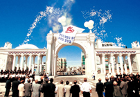

Global Service Corps
GSC는 '학문과 평화'의 전통을 계승하고, '인간에게 사랑을,
인류에게 평화를'이라는 가치 아래, 대학 사회공헌의 새로운 패러다임을 제시합니다.
경희의 사회공헌
경희대학교의 사회공헌 활동입니다.
경희 사회공헌의 역사
경희의 사회공헌 역사와 전통
경희의 사회공헌 활동은 세계 대학 역사에서 비견할 예를 찾아보기 힘들만큼 지속적이고 또 광범위 했습니다. 경희는 창학 초기이던 1950년대 중반부터 다양한 지역사회 봉사활동을 비롯해 밝은사회운동, 인류사회재건운동, 네오르네상스운동, 미래평화운동 등 다양한 사회공헌 활동을 지속적으로 펼쳐왔습니다.
- 2000s미래평화 운동
-
2011년UNAI-경희 국제회의 개최
-
2010년지구사회봉사단(GSC) 출범
-
2009년World Civic Forum 개최
- 1990s네오르네상스 운동
-
1999년서울NGO세계대회 개최
-

1995년네오르네상스운동 전개
-
1993년유네스코 평화교육상 수상
- 1980s국제평화에의 공헌
-
1987년'세계평화대백과사전' 편찬
-
1981년'세계평화의 날'
'세계평화의 해' 제정
- 1970s ~ 1960s
인강성 회복과 밝은 사회운동 -
1968년제2차 대학총장세계총회 개최
-
1965년잘살기운동
-

1963년경희가족운동
- 1950s 지역사회에 대한 공헌
-
조림녹화운동
-
농촌계몽운동
“ 앞으로의 미래 사회공헌 활동 역시 새로운 변화와
요구에 발 맞추어 확장·심화 되어갈 것 입니다. ”